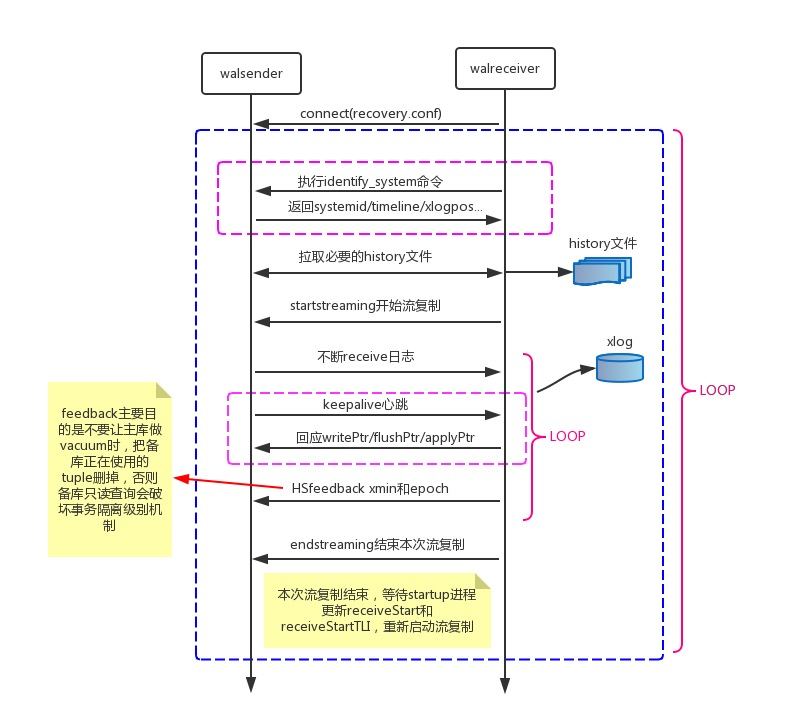

本文首发于 2015-11-21 20:02:26
引言
PostgreSQL 在 9.0 之后引入了主备流复制机制，通过流复制，备库不断的从主库同步相应的数据，并在备库 apply 每个 WAL record，这里的流复制每次传输单位是 WAL 日志的 record 。而 PostgreSQL 9.0 之前提供的方法是主库写完一个 WAL 日志文件后，才把 WAL 日志文件传送到备库，这样的方式导致主备延迟特别大。同时，PostgreSQL 9.0 之后提供了 Hot Standby，备库在应用 WAL record 的同时也能够提供只读服务，大大提升了用户体验。
主备总体结构
PostgreSQL 主备流复制的核心部分由 walsender，walreceiver 和 startup 三个进程组成。
walsender 进程是用来发送 WAL 日志记录的，执行顺序如下：
1 | PostgresMain()->exec_replication_command()->StartReplication()->WalSndLoop()->XLogSendPhysical() |
walreceiver 进程是用来接收 WAL 日志记录的，执行顺序如下：
1 | sigusr1_handler()->StartWalReceiver()->AuxiliaryProcessMain()->WalReceiverMain()->walrcv_receive() |
startup 进程是用来 apply 日志的，执行顺序如下：
1 | PostmasterMain()->StartupDataBase()->AuxiliaryProcessMain()->StartupProcessMain()->StartupXLOG() |

walsender 和 walreceiver 进程流复制过程
walsender 和 walreceiver 交互主要分为以下几个步骤：
- walreceiver 启动后通过
recovery.conf文件中的primary_conninfo参数信息连向主库，主库通过连接参数replication=true启动 walsender 进程； - walreceiver 执行
identify_system命令，获取主库systemid/timeline/xlogpos等信息，执行TIMELINE_HISTORY命令拉取 history 文件； - 执行
wal_startstreaming开始启动流复制，通过walrcv_receive获取 WAL 日志，期间也会回应主库发过来的心跳信息(接收位点、flush 位点、apply 位点)，向主库发送 feedback 信息(最老的事务 id)，避免 vacuum 删掉备库正在使用的记录； - 执行
walrcv_endstreaming结束流复制，等待 startup 进程更新receiveStart和receiveStartTLI，一旦更新，进入步骤2。

walreceiver和startup进程
startup 进程进入 standby 模式和 apply 日志主要过程：
读取
pg_control文件，找到 redo 位点；读取recovery.conf，如果配置standby_mode=on则进入 standby 模式。如果是 Hot Standby 需要初始化 clog、subtrans、事务环境等。初始化 redo 资源管理器，比如
Heap、Heap2、Database、XLOG等。读取 WAL record，如果 record 不存在需要调用
XLogPageRead->WaitForWALToBecomeAvailable->RequestXLogStreaming唤醒walreceiver从walsender获取 WAL record。对读取的 WAL record 进行 redo，通过
record->xl_rmid信息，调用相应的 redo 资源管理器进行 redo 操作。比如heap_redo的XLOG_HEAP_INSERT操作，就是通过 record 的信息在 buffer page 中增加一个 record：
1 | MemSet((char *) htup, 0, sizeof(HeapTupleHeaderData)); |
还有部分 redo 操作(vacuum 产生的 record)需要检查在 Hot Standby模式下的查询冲突，比如某些 tuples 需要 remove，而存在正在执行的query 可能读到这些 tuples，这样就会破坏事务隔离级别。通过函数 ResolveRecoveryConflictWithSnapshot 检测冲突，如果发生冲突，那么就把这个 query 所在的进程 kill 掉。
检查一致性，如果一致了，Hot Standby 模式可以接受用户只读查询；更新共享内存中
XLogCtlData的 apply 位点和时间线；如果恢复到时间点，时间线或者事务id需要检查是否恢复到当前目标；回到步骤3，读取next WAL record 。

欢迎关注我的微信公众号【数据库内核】：分享主流开源数据库和存储引擎相关技术。

| 标题 | 网址 |
|---|---|
| GitHub | https://dbkernel.github.io |
| 知乎 | https://www.zhihu.com/people/dbkernel/posts |
| 思否（SegmentFault） | https://segmentfault.com/u/dbkernel |
| 掘金 | https://juejin.im/user/5e9d3ed251882538083fed1f/posts |
| 开源中国（oschina） | https://my.oschina.net/dbkernel |
| 博客园（cnblogs） | https://www.cnblogs.com/dbkernel |